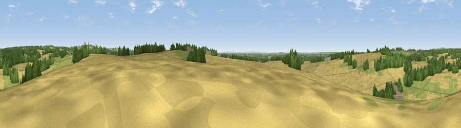

Viewpoint near Upham
#25709 in England · top 30% of its area beats it · near UphamThe view, rendered

A 360° render of this exact spot computed from the terrain model, tree cover and land cover — summer colours, afternoon light, calibrated against photographs of famous viewpoints. Real trees, hedges and buildings will differ in detail.
The panorama
Grey silhouette: terrain skyline in each direction (720 bearings, Earth curvature and refraction included). Dashed green: skyline with trees (+15 m) and buildings (+8 m) as obstacles. Blue strip: how far the ground is visible on each bearing.
Where the view opens
Wedge length = distance to the farthest visible ground on that bearing (vegetation-aware). Rings at 10, 25 and 50 km.
What fills the view
52% cropland · 27% grassland · 19% woodland · 2% built-up
Angular shares of the visible panorama (visual magnitude), not map area. Landscape diversity 0.47 (0–1 Shannon).
Key numbers
More beautiful places nearby
The staircase of upgrades: each row has a higher view potential than everything closer. Driving times are estimates from straight-line distance, calibrated against real road routing — check an actual route before setting out.
| Place | Direction | Drive | Score |
|---|---|---|---|
| Stephen's Castle Down | SE · 1 km | ~3 min | 52.0 |
| Viewpoint near Owslebury | NW · 3 km | ~7 min | 52.3 |
| Viewpoint near Cheriton | NE · 4 km | ~10 min | 54.9 |
| Viewpoint near Droxford | ESE · 5 km | ~11 min | 61.7 |
| Beacon Hill | ENE · 5 km | ~12 min | 71.7 |
| Viewpoint near Meonstoke | E · 9 km | ~17 min | 74.8 |
| Viewpoint near Buriton | E · 16 km | ~29 min | 75.3 |
| Viewpoint near Buriton | E · 17 km | ~29 min | 80.0 |
50.98374, -1.21464 · source: screening · position refined by local search. Computed location — check access rights before visiting.